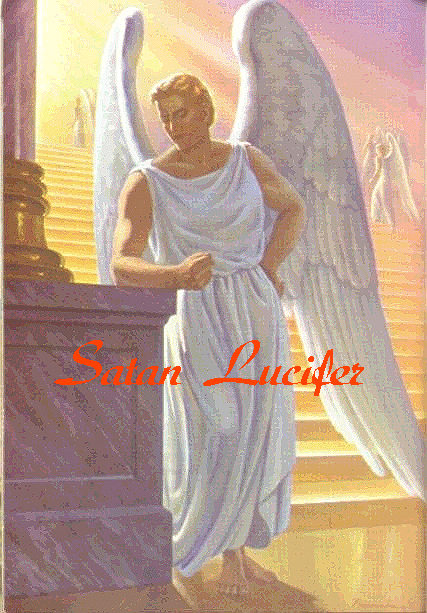
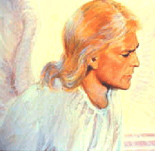
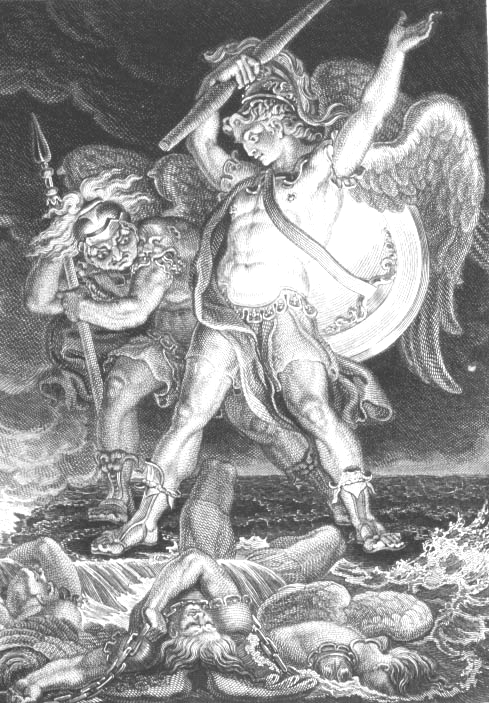
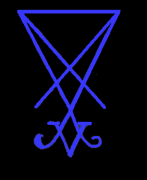
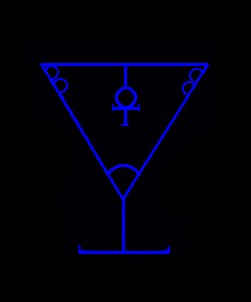
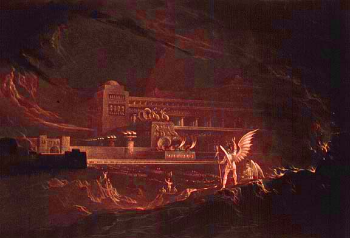

{kind=link}

Příliš dlouho se šířilo tolik lží a dezinformací o Satanovi. Mnozí z nás ho viděli, hovořili s ním, a dokonce zažili jeho astrální dotek. Téměř všichni, kdo ho známe, se shodujeme na jeho vzhledu. Nepřátelská takzvaná „náboženství“ příliš dlouho určovala, jak podle nich Satan vypadá, jak podle nich nich vypadají vypadají démoni. Jejich tvrzení nejsou nic jiného než rouhačské lži. On není rudý, s rohy a ocasem, ani nevypadá jako halloweenské monstrum. Nemá planoucí rudé oči ani gumová křídla. Tyto popisy mají za cíl ho urazit, očernit a rouhat se vůči němu. [Existují některé nižší řády démonů.
Jsou to ochránci a poslové, kteří slouží výše postaveným.
Démonům]. Zde jsou obrázky toho, jak se Satan jeví těm z nás, kteří ho viděli. V kontrastu k označování satanismu za „temnotu“, se Satan
objevuje v dlouhém bílém rouchu, které je stejné jako to, v němž je zobrazen na obrázcích níže. Je vrchním vůdcem severských bohů z tzv.
Orionské říše. Mnozí z nás se s ním často setkávají a mají s ním velmi blízký vztah. Je překrásný. Jeho vzhled je téměř shodný s zobrazením na obrázcích, jen se zřídkakdy objevuje s křídly.


Klikněte ZDE pro větší obrázek.
Zde je starý obraz Edwarda Burneyho z eposu „Ztracený ráj“.

Sigily otce Satana.
Sigil s anchem uvnitř poháru symbolizuje pohár s elixírem života. Jedná se o „svatý grál“ nesmrtelnosti. Svatým grálem
je sluneční čakra 666.


Zde je obraz Satanova paláce z knihy „Ztracený ráj“ od Johna Martina.
